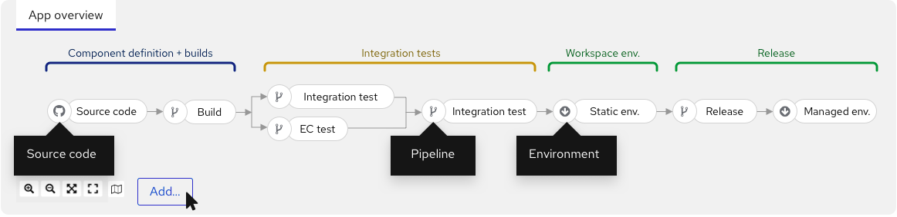

Pipeline visualization
Table of Contents
2. Web console Pipeline visualization
Pipeline builds appear in the web console as any other build, but they are visually distinct. The system displays the Pipeline stages, current execution stage, and the duration of each stage.

The following example displays the graphical representation of a Pipeline that the HACBS platform executes. You can access the logs and events associated with all the tasks.
The Pipeline visualisation is currently read-only. You can edit a Pipeline (the .yml file) by browsing to the relevant config file in a Git repository.
|